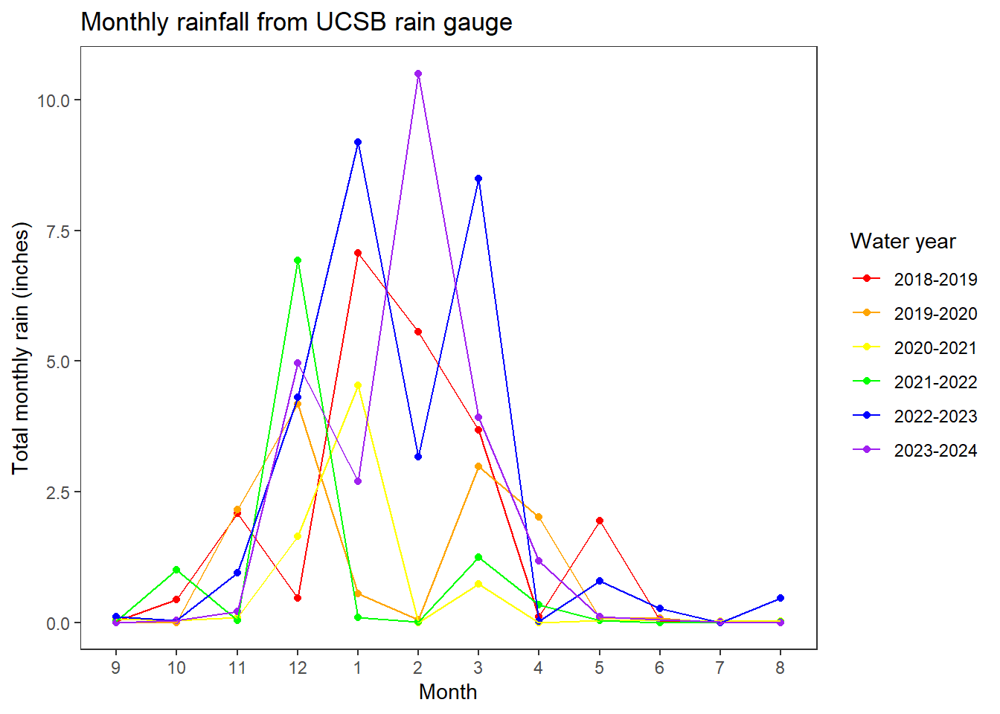

library(tidyverse) # loading in packages
library(janitor)
library(lterdatasampler)
library(rstatix)
library(car)
library(flextable)
rain <- read_csv("200dailys.csv") # reading in and storing problem 4 data as an object called "rain"This code was written for the midterm for ENVS 193DS, which is Statistics for Environmental Science. In the first section, I read in all of the packages that I needed for the entire midterm assignment, but not all of the packages will be used in this section because this was only part of the assignment. I also read in the csv file “200dailys.csv” and stored it as an object called “rain”. This file shows the monthly rainfall recorded by a UCSB rain gauge on top of Ellison Hall.
In the next section, the code wasn’t written by me because our instructions were to write in the annotations what each line of code is doing. You can therefore read the annotations to understand the code.
rain <- read_csv("200dailys.csv")
rain_clean <- rain |>
# 1. what changes after this function?
# Column names are cleaned to replace spaces with underscores, add numbers to duplicated names, and converts characters such as "%" and "#" to "percent" and "number", respectively.
# give an example.
# "average tussock cm" would be changed to "average_tussock_cm".
clean_names() |>
# 2. what new column is created?
# A column named "water_year_minus1".
# give an example of a value in this column.
# 1951
mutate(water_year_minus1 = water_year - 1) |>
# 3. what old column is changed?
# water_year.
# give an example of a value in the old column, and explain how it changed.
# A value in the old column was 1952 and it would become 1951-1952. It was changed by pasting first the year minus 1 (1951) followed by a "-" symbol and then the year (1952).
mutate(water_year = paste0(water_year_minus1, "-", water_year)) |>
# 4. what columns are excluded from the data frame?
# "water_year_minus1" and "code" are excluded.
# give an example of a value in water_year_minus1
# 1951
# give an example of a value in code
# E311
select(!c(water_year_minus1, code)) |>
# 5. which column is manipulated, and what changes about it?
# Hint: run str(rain_clean) in the Console. what do you see for the month column?
# The month column is manipulated. The month numbers are turned into factors and the levels of the factors are set with "9" as the first level, "10" as the second, and so on until "12" is the fourth and then it loops back around to "1" being the fifth and continues.
mutate(month = as_factor(month),
month = fct_relevel(
month,
"9", "10", "11", "12", "1", "2", "3", "4", "5", "6", "7", "8")
) |>
# 6. what is being calculated? on an annual, monthly, or daily scale?
# Total rainfall in inches is being calculated on an annual scale.
# give an example.
# There was one rain event in September which was 0.01 inches, and one rain event in October which was 0.30 inches. The sum() function would add these two numbers (0.01 + 0.30 = 0.31) and then move on to the next daily_rain cell to continue adding to this value.
group_by(month, water_year) %>%
summarize(total_rain = sum(daily_rain, na.rm = TRUE)) |>
ungroup() |>
# 7. what is being done to which columns?
# missing combinations of values of water_year and month are being filled in with 0
# give an example.
# july in 1951-1952 was not in the data frame previously, and now is present with a total rain of 0 inches
complete(water_year,
month,
fill = list(total_rain = 0)) |>
# 8. which observations are kept after this filtering step?
# Data for the years listed below are kept.
filter(water_year %in% c("2018-2019",
"2019-2020",
"2020-2021",
"2021-2022",
"2022-2023",
"2023-2024"))The last part of the assignment was to write the code to create a figure that looks exactly like the one below, which visualizes the data I stored as an object in the first code chunk. We had to write all of the code for this section from scratch in order to prove that we could apply what we learned in class towards making figures ourselves. This demonstrated our data visualization skills.
ggplot(data = rain_clean, # creating a plot using the rain_clean data frame
aes(x = month, # setting month as the x-axis
y = total_rain, # setting total_rain as the y-axis
color = water_year, # coloring by water_year
group = water_year)) + # grouping by water_year
geom_point() + # plotting points
geom_line() + # plotting lines
scale_color_manual(values = c("2018-2019" = "red", # assigning different colors to each year
"2019-2020" = "orange",
"2020-2021" = "yellow",
"2021-2022" = "green",
"2022-2023" = "blue",
"2023-2024" = "purple")) +
labs(title = "Monthly rainfall from UCSB rain gauge", # creating the title
x = "Month", # labeling the x-axis as "Month"
y = "Total monthly rain (inches)", # labeling the y-axis as "Total monthly rain (inches)"
color = "Water year") + # coloring by water year
theme_bw() + # making the theme black and white
theme(panel.grid = element_blank()) # getting rid of grid lines
Citation
BibTeX citation:
@online{kolb2025,
author = {Kolb, Kathryn},
title = {Code {Explanation}},
date = {2025-06-02},
url = {https://kathrynk04.github.io/posts/2025-06-02-code-explanation/},
langid = {en}
}
For attribution, please cite this work as:
Kolb, Kathryn. 2025. “Code Explanation.” June 2, 2025. https://kathrynk04.github.io/posts/2025-06-02-code-explanation/.